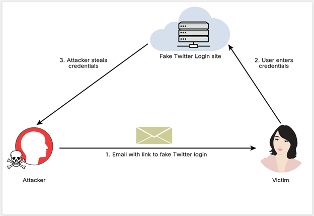
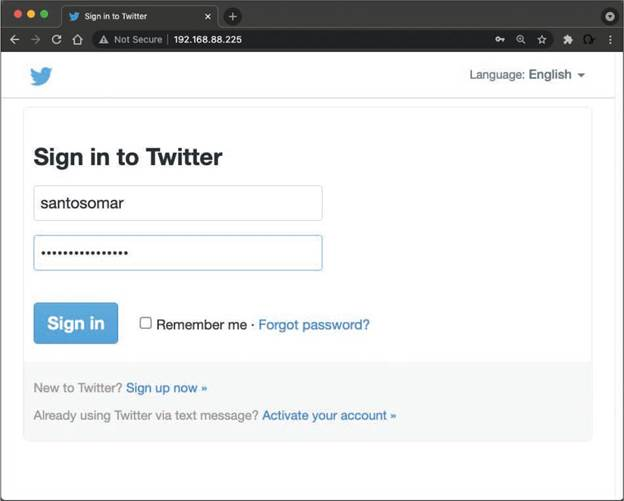
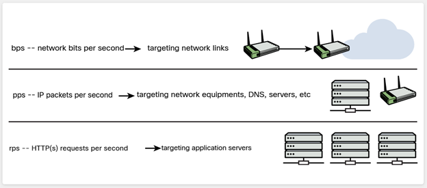
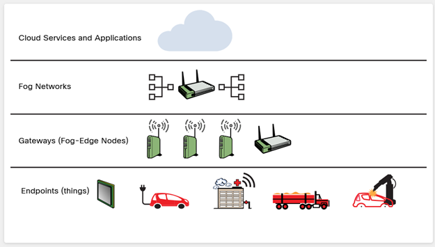
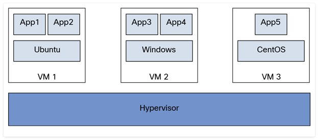
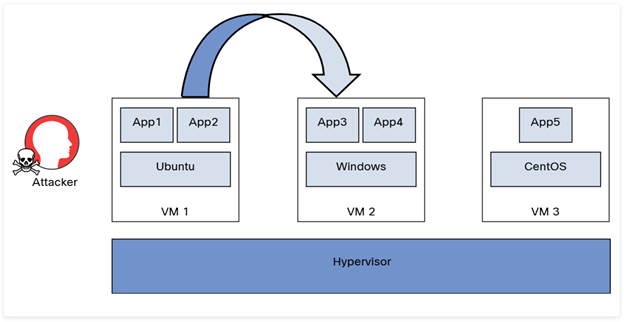
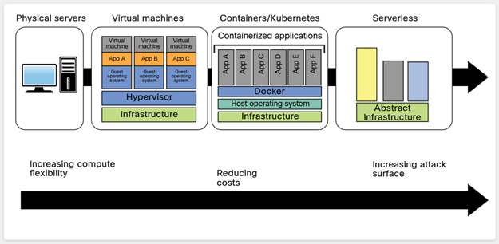
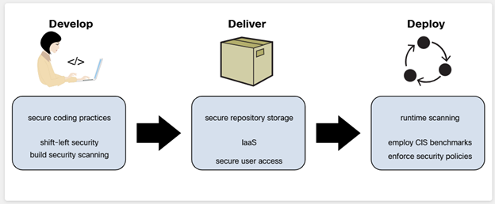
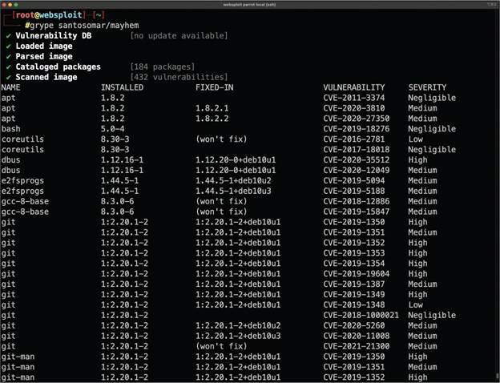

When we think of network security, we usually think about network infrastructure devices, clients, and servers that are attached to wired or wireless networks. However, any device that is connected to a network could serve as a gateway for attackers to penetrate an organization's data network. For example, it has become common to attach a wide range of home devices to the internet, including surveillance cameras, thermostats, televisions, and even refrigerators. More importantly, industrial, and critical infrastructure sensors and controllers are also attached to networks, and often reachable over the internet. Each one of these is a host on a network, and each one of them increases the network attack surface. All of these devices include some sort of embedded server that enables users to connect to them remotely. If you can connect to them over the internet, so can someone else.
Another trend that poses new security challenges is the migration of computing resources, data, and software to the cloud. Clouds are fundamentally different from on-premises computing. The cloud presents a network without a perimeter, there is no border between a traditional internal network and external users as there is when resources are housed on-site. All users are external. This lack of perimeter increases reliance on access control, cloud configuration, and network architecture for security. In addition, cloud applications and data are exposed to the internet via application programming interfaces (API). APIs are like portals into cloud applications and increase the network attack surface dramatically.
Pixel Paradise has adopted an infrastructure-as-a-service (IaaS) cloud delivery model as a way to increase adoption of their games by lowering hardware requirements to play their games and allowing their customers to play anywhere that has sufficient internet access. This exposes Pixel Paradise to risks including potential theft of gaming assets, authorization keys, or denial of access to purchased games. In addition, the Pixel Paradise gaming service includes a digital storefront which includes customer payment information.
We need to test special purpose devices housed at the Pixel Paradise facility, and we also need to test their cloud presence for vulnerabilities.
The adoption of cloud technology and cloud services has revolutionized how organizations develop, host, and deploy applications and store data. In addition, mobile devices and Internet of Things (IoT) devices communicate using a diverse set of protocols and technologies. Mobile and IoT devices also often communicate with applications hosted in the cloud. All these technologies and architectures increase the attack surface and introduce a variety of cybersecurity risks. In this module, you will learn about different attacks against cloud, mobile, and IoT implementations.
Module Title: Cloud, Mobile, and IoT Security
Module Objective: Explain how to exploit cloud, mobile, and IoT security vulnerabilities.
| Topic Title | Topic Objective |
|---|---|
| Researching Attack Vectors and Performing Attacks on Cloud Technologies | Explain how to attack cloud technologies. |
| Explaining Common Attacks and Vulnerabilities Against Specialized Systems | Explain common attacks against specialized systems. |
Cloud computing provides a lot of benefits to organizations. However, it is complex, and can be costly if not monitored carefully. Cloud services and accompanying technologies such as Kubernetes and Terraform, are new to many people in IT, and there is a shortage of people who are experts in cloud engineering. In addition, it is relatively easy to create cloud resources and also easy to lose track of them. It is completely possible that out-of-date software that is reachable in the cloud has been forgotten by cloud administrators.
Some providers of cloud software give their developers rights to configure cloud software resources for the testing of code. With so many people with limited expertise able to configure cloud resources, errors in configuration are bound to happen.
Because the cloud is relatively new, and some cloud concepts are pretty abstract, it is important for you to be familiar with it in order to conduct vulnerability scans and understand the results and remediation measures.
Many organizations are moving to the cloud or deploying hybrid solutions to host their applications. Organizations moving to the cloud are almost always looking to transition from capital expenditure (CapEx) to operating expenditure (OpEx). Most Fortune 500 companies operate in a multicloud environment. It is obvious that cloud computing security is more important today than ever before. Cloud computing security includes many of the same functionalities as traditional IT security, including protecting critical information from theft, data exfiltration, and deletion, as well as privacy.
The National Institute of Standards and Technology (NIST) authored Special Publication (SP) 800-145, "The NIST Definition of Cloud Computing", to provide a standard set of definitions for the different aspects of cloud computing. The SP 800-145 document also compares the different cloud services and deployment strategies. The advantages of using a cloud-based service include the following:
According to NIST, the essential characteristics of cloud computing include the following:
Cloud deployment models include the following:
Cloud computing can be broken into the following three basic models:
Infrastructure as a Service (IaaS)
IaaS is a cloud solution in which you rent infrastructure. You purchase virtual power to execute your software as needed. This is much like running a virtual server on your own equipment, except that you run a virtual server on a virtual disk. IaaS is similar to a utility company model in that you pay for what you use.
Platform as a Service (PaaS)
PaaS provides everything except applications. Services provided by this model include all phases of the systems development life cycle (SDLC) and can use application programming interfaces (APIs), website portals, or gateway software. These solutions tend to be proprietary, which can cause problems if the customer moves away from the provider's platform.
Software as a Service (SaaS)
SaaS is designed to provide a complete packaged solution. The software is rented out to the user. The service is usually provided through some type of front end or web portal. While the end user is free to use the service from anywhere, the company pays a per-use fee.
NIST Special Publication 500-292, "NIST Cloud Computing Reference Architecture", is another resource for learning more about cloud architecture.
Many attacks against cloud technologies are possible, and the following are just some of them:
The following sections provide details about each of these attacks against cloud-based services and infrastructures.
Pixel Paradise currently uses a cloud model in which each game instance is running on its own virtual machine in the cloud. They want to change the model to one in which users subscribe to their games for various periods of time. Which model are they looking to adopt?
Credential harvesting is not a new attack type, but the methodologies used by attackers have evolved throughout the years. Credential harvesting (or password harvesting) is the act of gathering and stealing valid usernames, passwords, tokens, PINs, and any other types of credentials through infrastructure breaches. In Module 4, "Social Engineering Attacks," you learned all about phishing and spear phishing attacks. One of the most common ways that attackers perform credential harvesting is by using phishing and spear phishing emails with links that could redirect a user to a bogus site. This "fake site" could be made to look like a legitimate cloud service, such as Gmail, Office 365, or even a social media site such as Twitter, LinkedIn, Instagram, or Facebook. This is why it is so important to use multifactor authentication. However, in some cases, attackers could bypass multifactor authentication by redirecting the user to a malicious site and stealing a session cookie from the user's browser.
Many cloud services and cloud-hosted applications use single sign-on (SSO), and others use federated authentication. Sometimes cloud-based applications allow you to log in with your Google, Apple, or Facebook credentials. Attackers could redirect users to impersonated websites that may look like legitimate Google, Apple, Facebook, or Twitter login pages. From there, the attacker could steal the victim's username and password. Figure 7-1 shows an example of a common credential harvesting attack in which the attacker sends to the victim a spear phishing email that includes a link to a fake site (in this example, a Twitter login).

In Module 4, you learned about the Social-Engineer Toolkit (SET). In the following examples, you will see how easy it is to perform a social engineering attack and instantiate a fake website (in this case, a fake Twitter login site) to perform a credential harvesting attack.
Step 1 - 2
Step 1. Launch SET by entering the setoolkit command.
Step 2. Select 1) Social-Engineering Attacks from the main menu, as shown in Example 7-1.
Example 7-1 — Starting the Social Engineering Attack
Step 3
Step 3. In the menu that appears (see Example 7-2), select 2) Website Attack Vectors.
Example 7-2 — Selecting Website Attack Vectors
Step 4
Step 4. In the menu and explanation that appear next (see Example 7-3), select 3) Credential Harvester Attack Method.
Example 7-3 — Selecting the Credential Harvester Attack Method
Step 5
Step 5. In the menu that appears next (see Example 7-4), select 1) Web Templates to use a predefined web template (Twitter). As you can see, you also have options to clone an existing website or import a custom website. In this example, you use a predefined web template.
Example 7-4 — Selecting a Predefined Web Template
Step 6
Step 6. In the menu shown in Example 7-5, enter the IP address of the host that you would like to use to harvest the user credentials (in this case, 192.168.88.225). In this example, SET has recognized the attacking system's IP address. If this occurs for you, you can just press Enter to select the attacking system's IP address.
Example 7-5 — Entering the Credential Harvester's IP Address
Step 7
Step 7. Select 3. Twitter, as shown in Example 7-6.
Example 7-6 — Selecting the Template for Twitter
You can then redirect users to this fake Twitter site by sending a spear phishing email or taking advantage of web vulnerabilities such as cross-site scripting (XSS) and cross-site request forgery (CSRF). Figure 7-2 shows the fake Twitter login page, where the user enters their credentials.

Example 7-7 shows how the attacking system harvests the user credentials. The username entered is santosomar, and the password is superbadpassword. You can also see the session token.
Example 7-7 — Harvesting the User Credentials
Attackers have been known to harvest cloud service provider credentials once they get into their victims' systems. Different threat actors have extended their credential harvesting capabilities to target multiple cloud and non-cloud services in victims' internal networks and systems after the exploitation of other vulnerabilities.
Pixel Paradise currently only requires gamers to login with a username and password. This type of login is very susceptible to phishing attacks that attempt to redirect gamers to a fake website. Which tool best helps mitigate this type of credential harvesting?
Privilege escalation is the act of exploiting a bug or design flaw in a software or firmware application to gain access to resources that normally would have been protected from an application or a user. This results in a user gaining additional privileges beyond what the application developer originally intended (for example, a regular user gaining administrative control or a particular user being able to read another user's email without authorization).
The original developer does not intend for the attacker to gain higher levels of access but probably doesn't enforce a need-to-know policy properly and/or hasn't validated the code of the application appropriately. Attackers take advantage of this to gain access to protected areas of operating systems or to applications (for example, reading another user's email without authorization). Buffer overflows are used on Windows computers to elevate privileges as well. To bypass digital rights management (DRM) on games and music, attackers use a method known as jailbreaking, which is another type of privilege escalation, most commonly found on Apple iOS-based mobile devices. Malware also attempts to exploit privilege escalation vulnerabilities, if any exist on the system. Privilege escalation can also be attempted on network devices. Generally, the fix for this is simply to update the device and to check for updates on a regular basis.
The following are a couple different types of privilege escalation:
Vertical Privilege Escalation
This type of privilege escalation, also called privilege elevation, occurs when a lower-privileged user accesses functions reserved for higher-privileged users (for example, a standard user accessing functions of an administrator). To protect against this situation, you should update the network device firmware. In the case of an operating system, it should again be updated. The use of some type of access control system – for example, User Account Control (UAC) – is also advisable.
Horizontal Privilege Escalation
This type of privilege escalation occurs when a normal user accesses functions or content reserved for other normal users (for example, one user reading another's email). This can be done through hacking or by a person walking over to someone else's computer and simply reading their email. Always have your users lock their computer (or log off) when they are not physically at their desk.
The underlying mechanics and the attacker motive of a cloud account takeover attack are the same as for an account takeover that takes place on premises. In an account takeover, the threat actor gains access to a user or application account and uses it to then gain access to more accounts and information. There are different ways that an account takeover can happen in the cloud. The impact that an account takeover has in the cloud can also be a bit different from the impact of an on-premises attack. Some of the biggest differences are the organization's ability to detect a cloud account takeover, find out what was impacted, and determine how to remediate and recover.
There are a number of ways to detect account takeover attacks. Select each for more detail.
Login location
The location of the user can clue you in to a takeover. For instance, you may not do business in certain geographic locations and countries. You can prevent a user from logging in from IP addresses that reside in those locations. Keep in mind, however, that an attacker can easily use a VPN to bypass this restriction.
Failed login attempts
It is now fairly easy to detect and block failed login attempts from a user or an attacker.
Lateral phishing emails
These are phishing emails that originate from an account that has already been compromised by the attacker.
Malicious OAuth, SAML, or OpenID Connect connections
An attacker could create a fake application that could require read, write, and send permissions for email SaaS offerings such as Office 365 and Gmail. Once the application is granted permission by the user to "connect" and authenticate to these services, the attacker could manipulate it.
Abnormal file sharing and downloading
You might suspect an account takeover attack if you notice that a particular user is suddenly sharing or downloading a large number of files.
Traditionally, software developers used hard-coded credentials to access different services, such as databases and shared files on an FTP server. To reduce the exposure of such insecure practices, cloud providers (such as Amazon Web Services [AWS]) have implemented metadata services. When an application requires access to specific assets, it can query the metadata service to get a set of temporary access credentials. This temporary set of credentials can then be used to access services such as AWS Simple Cloud Storage (S3) buckets and other resources. In addition, these metadata services are used to store the user data supplied when launching a new virtual machine (VM) – such as an Amazon Elastic Compute Cloud or AWS EC2 instance – and configure the application during instantiation.
As you can probably already guess, metadata services are some of the most attractive services on AWS for an attacker to access. If you are able to access these resources, at the very least, you will get a set of valid AWS credentials to interface with the API. Software developers often include sensitive information in user startup scripts. These user startup scripts can be accessed through a metadata service and allow AWS EC2 instances (or similar services with other cloud providers) to be launched with certain configurations. Sometimes startup scripts even contain usernames and passwords used to access various services.
By using tools such as nimbostratus (https://github.com/andresriancho/nimbostratus), you can find vulnerabilities that could lead to metadata service attacks.
When you are pen testing a web application, look for functionality that fetches page data and returns it to the end user (similar to the way a proxy would). The metadata service doesn't require any particular parameters. If you access the URL https://x.x.x.x/latest/meta-data/iam/security-credentials/IAM_USER_ROLE_HERE, it will return the AccessKeyID, SecretAccessKey, and Token values you need to authenticate into the account.
Attackers can leverage misconfigured cloud assets in a number of ways. Select each for more information.
Identity and Access Management (IAM) Implementations
IAM solutions are used to administer user and application authentication and authorization. Key IAM features include SSO, multifactor authentication, and user provisioning and life cycle management. If an attacker is able to manipulate a cloud-based IAM solution in an IaaS or PaaS environment, it could be catastrophic for the cloud consumer (that is, the organization developing, deploying, and consuming cloud applications).
Federation Misconfigurations
Federated authentication (or federated identity) is a method of associating a user's identity across different identity management systems. For example, every time you access a website, a web application, or a mobile application that allows you to log in or register with your Facebook, Google, or Twitter account, that application is using federated authentication.
Often application developers misconfigure the implementation of the underlying protocols used in a federated identity environment (such as SAML, OAuth, and OpenID). For instance, a SAML assertion – that is, the XML document the identity provider sends to the service provider that contains the user authorization – should contain a unique ID that is accepted only once by the application. If you do not configure your application this way, an attacker could replay a SAML message to create multiple sessions. Attackers could also change the expiration date on an expired SAML message to make it valid again or change the user ID to a different valid user. In some cases, an application could grant default permissions or higher permissions to an unmapped user. Subsequently, if an attacker changes the user ID to an invalid user, the application could be tricked into giving access to the specific resource.
In addition, your application might use security tokens like the JSON Web Token (JWT) and SAML assertions to associate permissions from one platform to another. An attacker could steal such tokens and leverage misconfigured environments to access sensitive data and resources.
Object Storage
Insecure permission configurations for cloud object storage services, such as Amazon's AWS S3 buckets, are often the cause of data breaches.
Omar Santos has included several tools that can be used to scan insecure S3 buckets at my GitHub repository, at https://github.com/The-Art-of-Hacking/h4cker/tree/master/cloud_resources.
Containerization Technologies
Attacks against container-based deployments (such as Docker, Rocket, LXC, and containerd) have led to massive data breaches. For instance, you can passively obtain information from Shodan (shodan.io) or run active recon scans to find cloud deployments widely exposing the Docker daemon or Kubernetes elements to the Internet. Often attackers use stolen credentials or known vulnerabilities to compromise cloud-based applications. Similarly, attackers use methods such as typosquatting to create malicious containers and post them in Docker Hub. This attack, which can be considered a supply chain attack, can be very effective. You could, for example, download the base image for NGINX or Apache HTTPd from Docker Hub, and that Docker image might include a backdoor that the attacker can use to manipulate your applications and underlying systems.
Typosquatting is a technique that leverages human error when typing URLs in a web browser or accessing other resources (as in the earlier example of impersonating legitimate Docker containers in Docker Hub).
One of the benefits of leveraging cloud services is the distributed and resilient architecture that most leading cloud providers offer. This architecture helps minimize the impact of a DoS or distributed denial-of-service (DDoS) attack compared to what it would be if you were hosting your application on premises in your data center. On the other hand, in recent years, the volume of bits per second (bps), packets per second (pps), and HTTP(s) requests per second (rps) have increased significantly. Often attackers use botnets of numerous compromised laptops and desktop systems and compromise mobile, IoT, and cloud-based systems to launch these attacks. Figure 7-3 illustrates the key metrics used to identify volumetric DDoS attacks.

However, attackers can launch more strategic DoS attacks against applications hosted in the cloud that could lead to resource exhaustion. For example, they can leverage a single-packet DoS vulnerability in network equipment used in cloud environments, or they can leverage tools to generate crafted packets to cause an application to crash. For instance, you can search in Exploit Database (exploit-db.com) for exploits that can be used to leverage "denial of service" vulnerabilities, where an attacker could just send a few packets and crash an application or the whole operating system. Example 7-8 shows how to search for exploits using the searchsploit tool.
Example 7-8 — Using the searchsploit to Search for Exploits
Another example of a DoS attack that can affect cloud environments is the direct-to-origin (D2O) attack. In a D2O attack, threat actors are able to reveal the origin network or IP address behind a content delivery network (CDN) or large proxy placed in front of web services in a cloud provider. A D2O attack could allow attackers to bypass different anti-DDoS mitigations.
A CDN is a geographically distributed network of proxies in data centers around the world that offers high availability and performance benefits by distributing web services to end users around the world.
Cloud deployments are susceptible to malware injection attacks. In a cloud malware injection attack, the attacker creates a malicious application and injects it into a SaaS, PaaS, or IaaS environment. Once the malware injection is completed, the malware is executed as one of the valid instances running in the cloud infrastructure. Subsequently, the attacker can leverage this foothold to launch additional attacks, such as covert channels, backdoors, eavesdropping, data manipulation, and data theft.
Side-channel attacks are often based on information gained from the implementation of the underlying computer system (or cloud environment) instead of a specific weakness in the implemented technology or algorithm. For instance, different elements – such as computing timing information, power consumption, electromagnetic leaks, and even sound – can provide detailed information that can help an attacker compromise a system. The attacker aims to gather information from or influence an application or a system by measuring or exploiting indirect effects of the system or its hardware. Most side-channel attacks are used to exfiltrate credentials, cryptographic keys, and other sensitive information by measuring coincidental hardware emissions.
Side-channel attacks can be used against VMs and in cloud computing environments where a compromised system controlled by the attacker and target share the same physical hardware.
Examples of vulnerabilities that could lead to side-channel attacks are the Spectre and Meltdown vulnerabilities affecting Intel, AMD, and ARM processors. Cloud providers that use Intel CPUs in their virtualized solutions could be affected by these vulnerabilities if they do not apply the appropriate patches. You can find information about Spectre and Meltdown at https://spectreattack.com.
Pixel Paradise makes heavy use of cloud services for both gamers and for storing their code repositories. Therefore, they are vulnerable to all the cloud attacks discussed so far. To verify you understand these cloud attacks, match each type to its description.
| Attack Type | Description |
|---|---|
| A — Credential harvesting | Gathering and stealing usernames, passwords, tokens, and PINs. |
| B — Privilege escalation | Exploiting a bug or design flaw in an application to gain unauthorized levels of privilege to resources. |
| C — Resource exhaustion | Leveraging tools to send crafted packets to overwhelm resources and cause an application to crash. |
| D — Malware injection | Providing a foothold to launch additional attacks by injecting a malicious application to be executed as one of the valid instances running in the cloud infrastructure. |
| E — Account takeover | Gaining access to a user or application account and then using it to gain access to more accounts and information. |
In Module 6, "Exploiting Application-Based Vulnerabilities," you learned that documents such as Swagger and the OpenAPI Specification documents can help you greatly when you're assessing API implementations.
Swagger is a modern framework of API documentation and development that is the basis of the OpenAPI Specification (OAS). Additional information about Swagger can be obtained at href="https://swagger.io/" target="_blank">https://swagger.io. The OAS specification is available at https://github.com/OAI/OpenAPI-Specification.
Software development kits (SDKs) and cloud development kits (CDKs) can provide great insights about cloud-hosted applications, as well as the underlying infrastructure. An SDK is a collection of tools and resources to help with the creation of applications (on premises or in the cloud). SDKs often include compilers, debuggers, and other software frameworks.
CDKs, on the other hand, help software developers and cloud consumers deploy applications in the cloud and use the resources that the cloud provider offers. For example, the AWS Cloud Development Kit (AWS CDK) is an open-source software development framework that cloud consumers and AWS customers use to define cloud application resources using familiar programming languages.
The following site provides detailed information on how to get started with the AWS CDK: href="https://docs.aws.amazon.com/cdk/latest/guide/getting_started.html" target="_blank">https://docs.aws.amazon.com/cdk/latest/guide/getting_started.html.
During our reconnaissance of the Pixel Paradise network, we discovered that they appear to be using internet-connected surveillance cameras for security monitoring. The cameras are a common and well-known brand. We will be testing for vulnerabilities in them as part of our pentesting agreement.
Pixel Paradise has not yet distributed their own gaming app for mobile. We offered to provide them with some guidelines for secure mobile app development since we have some experience testing mobile apps for other customers.
In this section, you will learn about a variety of attacks against mobile devices, Internet of Things (IoT) devices, data storage system vulnerabilities, vulnerabilities affecting VMs, and containerized applications and workloads.
Attackers use various techniques to compromise mobile devices. Select each of these common mobile device attacks for more information.
Reverse Engineering
The process of analyzing the compiled mobile app to extract information about its source code could be used to understand the underlying architecture of a mobile application and potentially manipulate the mobile device. Attackers use reverse engineering techniques to compromise the mobile device operating system (for example, Android, Apple iOS) and root or jailbreak mobile devices.
OWASP has different "crack-me" exercises that help you practice reverse engineering of Android and iOS applications. See https://github.com/OWASP/owasp-mstg/tree/master/Crackmes.
Sandbox Analysis
iOS and Android apps are isolated from each other via sandbox environments. Sandboxes in mobile devices are a mandatory access control mechanism describing the resources that a mobile app can and can't access. Android and iOS provide different interprocess communication (IPC) options for mobile applications to communicate with the underlying operating system. An attacker could perform detailed analysis of the sandbox implementation in a mobile device to potentially bypass the access control mechanisms implemented by Google (Android) or Apple (iOS), as well as mobile app developers.
Spamming
Unsolicited messages are a problem with email and with text messages and other mobile messaging applications as well. In Module 4, you learned about SMS phishing attacks, which continue to be some of the most common attacks against mobile users. In such an attack, a user may be presented with links that could redirect to malicious sites to steal sensitive information or install malware.
The following are some of the most prevalent vulnerabilities affecting mobile devices. Select each for more information.
Insecure storage
A best practice is to save as little sensitive data as possible in a mobile device's permanent local storage. However, at least some user data must be stored on most mobile devices. Both Android and iOS provide secure storage APIs that allow mobile app developers to use the cryptographic hardware available on the mobile platform. If these resources are used correctly, sensitive data and files can be secured via hardware-based strong encryption. However, mobile app developers often do not use these secure storage APIs successfully, and an attacker could leverage these vulnerabilities. For example, the iOS Keychain is designed to securely store sensitive information, such as encryption keys and session tokens. It uses an SQLite database that can be accessed through the Keychain APIs only. An attacker could use static analysis or reverse engineering to see how applications create keys and store them in the Keychain.
Passcode vulnerabilities and biometrics integrations
Often mobile users "unlock" a mobile device by providing a valid PIN (passcode) or password or by using biometric authentication, such as fingerprint scanning or face recognition. Android and iOS provide different methods for integrating local authentication into mobile applications. Vulnerabilities in these integrations could lead to sensitive data exposure and full compromise of the mobile device. Attacks such as the objection biometric bypass attack can be used to bypass local authentication in iOS and Android devices. OWASP provides guidance on how to test iOS local authentication at href="https://github.com/OWASP/owasp-mstg/blob/master/Document/0x06f-Testing-Local-Authentication.md" target="_blank">https://github.com/OWASP/owasp-mstg/blob/master/Document/0x06f-Testing-Local-Authentication.md.
Certificate pinning
Attackers use certificate pinning to associate a mobile app with a particular digital certificate of a server. The purpose is to avoid accepting any certificate signed by a trusted certificate authority (CA). The idea is to force the mobile app to store the server certificate or public key and subsequently establish connections only to the trusted/known server (referred to as "pinning" the server). The goal of certificate pinning is to reduce the attack surface by removing the trust in external CAs. There have been many incidents in which CAs have been compromised or tricked into issuing certificates to impostors. Attackers have tried to bypass certificate pinning by jailbreaking mobile devices and using utilities such as SSL Kill Switch 2 (see https://github.com/nabla-c0d3/ssl-kill-switch2) or Burp Suite Mobile Assistant app or by using binary patching and replacing the digital certificate.
Using known vulnerable components
Attackers may leverage known vulnerabilities against the underlying mobile operating system, or dependency vulnerabilities (that is, vulnerabilities in dependencies of a mobile application). Patching fragmentation is one of the biggest challenges in Android-based implementations. Android fragmentation is the term applied to the numerous Android versions that are supported or not supported by different mobile devices. Keep in mind that Android is not only used in mobile devices but also in IoT environments. Some mobile platforms or IoT devices may not support a version of Android that has addressed known security vulnerabilities. Attackers can leverage these compatibility issues and limitations to exploit such vulnerabilities.
Execution of activities using root and over-reach of permissions
Application developers must practice the least privilege concept. That is, they should not allow mobile applications to run as root and should give them only the access they need to perform their tasks.
Business logic vulnerabilities
An attacker can use legitimate transactions and flows of an application in a way that results in a negative behavior or outcome. Most common business logic problems are different from the typical security vulnerabilities in applications (such as XSS, CSRF, and SQL injection). A challenge with business logic flaws is that they can't typically be found by using scanners or any other similar tools.
In Module 10, "Tools and Code Analysis," you will learn details about many tools used in pen testing engagements. At this point, let's look at some of the tools most commonly used to perform security research and test the security posture of mobile devices. Select each of the following tool for more information.
Burp Suite
In Module 10, you will learn about proxies and web application security tools such as Burp Suite. Burp Suite can also be used to test mobile applications and determine how they communicate with web services and APIs. You can download Burp Suite from https://portswigger.net/burp.
Drozer
This Android testing platform and framework provides access to numerous exploits that can be used to attack Android platforms. You can download Drozer from https://labs.withsecure.com/tools/drozer.
needle
This open-source framework is used to test the security of iOS applications. You can download needle from https://github.com/WithSecureLabs/needle.
Mobile Security Framework (MobSF)
MobSF is an automated mobile application and malware analysis framework. You can download it from href="https://github.com/MobSF/Mobile-Security-Framework-MobSF" target="_blank">https://github.com/MobSF/Mobile-Security-Framework-MobSF.
Postman
Postman is used to test and develop APIs. You can obtain information and download it from href="https://www.postman.com/" target="_blank">https://www.postman.com.
Ettercap
This tool is used to perform on-path attacks. You can download Ettercap from href="https://www.ettercap-project.org/" target="_blank">https://www.ettercap-project.org. An alternative tool to Ettercap, called Bettercap, is available at https://www.bettercap.org.
Frida
Frida is a dynamic instrumentation toolkit for security researchers and reverse engineers. You can download it from https://frida.re.
Objection
This runtime mobile platform and app exploration toolkit uses Frida behind the scenes. You can use Objection to bypass certificate pinning, dump keychains, perform memory analysis, and launch other mobile attacks. You can download Objection from https://github.com/sensepost/objection.
Android SDK tools
You can use Android SDK tools to analyze and obtain detailed information about the Android environment. You can download Android Studio, which is the primary Android SDK provided by Google, from href="https://developer.android.com/studio" target="_blank">https://developer.android.com/studio.
ApkX
This tool enables you to decompile Android application package (APK) files. You can download it from href="https://github.com/b-mueller/apkx" target="_blank">https://github.com/b-mueller/apkx.
APK Studio
You can use this tool to reverse engineer Android applications. You can download APK Studio from href="https://github.com/vaibhavpandeyvpz/apkstudio" target="_blank">https://github.com/vaibhavpandeyvpz/apkstudio.
You are drafting a set of recommendations to give Pixel Paradise for guidance as they design and code their planned mobile gaming app. You are writing about the principle of least privilege. Why should the mobile application developers use this principle as they develop the mobile application?
Pixel Paradise relies heavily on mobile devices both for its gaming users and for its employees. Therefore, you need to be able to identify tools that are commonly used to perform security research and tools used to test the security posture of mobile devices. Match each of the following tool to its description.
| Tool | Description |
|---|---|
| A — MobSF | An automated mobile application and malware analysis framework. |
| B — Postman | Used to test and develop APIs. |
| C — Frida | Dynamic instrumentation toolkit for security researchers and reverse engineers. |
| D — ApkX | Decompiles Android application package files. |
| E — Drozer | Provides access to numerous exploits that can be used to attack Android platforms. |
| F — Ettercap | Used to perform on-path attacks. |
IoT is an incredibly broad term that can be applied across personal devices, industrial control systems (ICS), transportation, and many other businesses and industries. Designing and securing IoT systems – (including supervisory control and data acquisition (SCADA), Industrial Internet of Things (IIoT), and ICS – involves a lot of complexity. For instance, IoT solutions have challenging integration requirements, and IoT growth is expanding beyond the support capability of traditional IT stakeholders (in terms of scalability and the skills required). Managing and orchestrating IoT systems introduces additional complexity due to disparate hardware and software, the use of legacy technologies, and, often, multiple vendors and integrators. IoT platforms must integrate a wide range of IoT edge devices with varying device constraints and must be integrated to back-end business applications. In addition, no single solution on the market today can be deployed across all IoT scenarios.
The IoT market is extremely large and includes multiple platform offerings from startups as well as very large vendors. In many cases, IoT environments span a range of components that include sensors, gateways, network connectivity, applications, and cloud infrastructure. The unfortunate reality is that most IoT security efforts today focus on only a few elements of the entire system. A secure IoT platform should provide the complete end-to-end infrastructure to build an IoT solution, including the software, management, and security to effectively collect, transform, transport, and deliver data to provide business value. This is, of course, easier said than done.
Analyzing IoT protocols is important for tasks such as reconnaissance as well as exploitation. On the other hand, in the IoT world, you will frequently encounter custom, proprietary, or new network protocols. Some of the most common network protocols for IoT implementations include the following:
For instance, Bluetooth Low Energy (BLE) is used by IoT home devices, medical, industrial, and government equipment. You can analyze protocols such as BLE by using specialized antennas and equipment such as the Ubertooth One (https://greatscottgadgets.com/ubertoothone/). BLE involves a three-phase process to establish a connection:
Phase 1. Pairing feature exchange
Phase 2. Short-term key generation
Phase 3. Transport-specific key distribution
BLE implements a number of cryptographic functions. It supports AES for encryption and key distribution exchange to share different keys among the BLE-enabled devices. However, many devices that support BLE do not even implement the BLE-layer encryption. In addition, mobile apps cannot control the pairing, which is done at the operating system level. Attackers can scan BLE devices or listen to BLE advertisements and leverage these misconfigurations. Then they can advertise clone/fake BLE devices and perform on-path (formerly known as man-in-the-middle) attacks.
In some cases, IoT proprietary or custom protocols can be challenging. Even if you can capture network traffic, packet analyzers like Wireshark often can't identify what you've found. Sometimes, you need to write new tools to communicate with IoT devices.
Tools such as GATTacker (https://github.com/securing/gattacker) can be used to perform on-path attacks in BLE implementations. BtleJuice (https://github.com/DigitalSecurity/BtleJuice) is a framework for performing interception and manipulation of BLE traffic.
Pixel Paradise does not rely heavily on IoT devices yet, except for some security monitoring devices inside and outside their offices. However, Protego does have other clients that make heavy use of IoT systems. What makes managing and securing IoT systems challenging? (Choose three.)
There are a few special considerations to keep in mind when trying to secure IoT implementations. Select each for more information.
Fragile Environment
Many IoT devices (including sensors and gateways) have limited compute resources. Because of this lack of resources, some security features, including encryption, may not even be supported in IoT devices.
Availability Concerns
DoS attacks against IoT systems are a major concern.
Data Corruption
IoT protocols are often susceptible to input validation vulnerabilities, as well as data corruption issues.
Data Exfiltration
IoT devices could be manipulated by an attacker and used for sensitive data exfiltration.
The following are some of the most common security vulnerabilities affecting IoT implementations. Select each vulnerability for more information.
Insecure defaults
Default credentials and insecure default configurations are often concerns with IoT devices. For instance, if you do a search in Shodan.io for IoT devices (or click on the Explore section), you will find hundreds of IoT devices with default credentials and insecure configurations exposed on the Internet.
Plaintext communication and data leakage
As mentioned earlier, some IoT devices do not provide support for encryption. Even if encryption is supported, many IoT devices fail to implement encrypted communications, and an attacker could easily steal sensitive information. The leakage of sensitive information is always a concern with IoT devices.
Hard-coded configurations
Often IoT vendors sell their products with hard-coded insecure configurations or credentials (including passwords, tokens, encryption keys, and more).
Outdated firmware/hardware and the use of insecure or outdated components
Many organizations continue to run outdated software and hardware in their IoT devices. In some cases, some of these devices are never updated! Think about an IoT device controlling different operations on an oil rig platform in the middle of the ocean. In some cases, these devices are never updated, and if you update them, you will have to send a crew to physically perform a software or hardware upgrade. IoT devices often lack a secure update mechanism.
You are compiling a checklist of items that you will verify as part of the test of the Pixel Paradise networked video surveillance devices. What should you verify to ensure that the devices are secure? (Choose three.)
With the incredibly large number of IoT architectures and platforms available today, choosing which direction to focus on is a major challenge. IoT architectures extend from IoT endpoint devices (things) to intermediary "fog" networks and cloud computing. Gateways and edge nodes are devices such as switches, routers, and computing platforms that act as intermediaries ("the fog layer") between the endpoints and the higher layers of the IoT system. The IoT architectural hierarchy high-level layers are illustrated in Figure 7-4.

Misconfigurations in IoT on-premises and cloud-based solutions can lead to data theft. The following are some of the most common misconfigurations of IoT devices and cloud-based solutions. Select each misconfiguration for more information.
Default/blank username/password
Hardcoded or default credentials are often left in place by administrators and in some cases by software developers, exposing devices or the cloud environment to different attacks.
Network exposure
Many IoT, ICS, and SCADA systems should never be exposed to the Internet (see href="https://www.shodan.io/explore/category/industrial-control-systems" target="_blank">https://www.shodan.io/explore/category/industrial-control-systems). For example, programmable logic controllers (PLCs) controlling turbines in a power plant, the lighting at a stadium, and robots in a factory should never be exposed to the Internet. However, you can often see such systems in Shodan scan results.
Lack of user input sanitization
Input validation vulnerabilities in protocols such as Modbus, S7 Communication, DNP3, and Zigbee could lead to DoS and code execution.
Underlying software vulnerabilities and injection vulnerabilities
In Module 6, you learned about SQL injection and how attackers can inject malicious SQL statements after "escaping input" with a single quote (by using the single quote method). IoT systems can be susceptible to similar vulnerabilities.
Error messages and debug handling
Many IoT systems include details in error messages and debugging output that can allow an attacker to obtain sensitive information from the system and underlying network.
IoT implementations have suffered from many management interface vulnerabilities. For example, the Intelligent Platform Management Interface (IPMI) is a collection of compute interface specifications (often used by IoT systems) designed to offer management and monitoring capabilities independently of the host system's CPU, firmware, and operating system. System administrators can use IPMI to enable out-of-band management of computer systems (including IoT systems) and to monitor their operation. For instance, you can use IPMI to manage a system that may be powered off or otherwise unresponsive by using a network connection to the hardware rather than to an operating system or login shell. Many IoT devices have supported IPMI to allow administrators to remotely connect and manage such systems.
An IPMI subsystem includes a main controller, called a baseboard management controller (BMC), and other management controllers, called satellite controllers. The satellite controllers within the same physical device connect to the BMC via the system interface called Intelligent Platform Management Bus/Bridge (IPMB). Similarly, the BMC connects to satellite controllers or another BMC in other remote systems via the IPMB.
The BMC, which has direct access to the system's motherboard and other hardware, may be leveraged to compromise the system. If you compromise the BMC, it will provide you with the ability to monitor, reboot, and even potentially install implants (or any other software) in the system. Access to the BMC is basically the same as physical access to the underlying system.
An organization is using IPMI to manage its server network. How does IPMI introduce vulnerabilities into the network?
A VM is supposed to be a completely isolated system. One VM should not have access to resources and data from another VM unless that is strictly allowed and configured. Figure 7-5 shows three VMs running different applications and operating systems.

The hypervisor is the entity that controls and manages the VMs. There are two types of hypervisors:
These virtual systems have been susceptible to many vulnerabilities, including the following:

As shown in Figure 7-7, computing has evolved from traditional physical (bare-metal) servers to VMs, containers, and serverless architectures.

Vulnerabilities in applications and in open-source software running in containers such as Docker, Rocket, and containerd are often overlooked by developers and IT staff. Attackers may take advantage of these vulnerabilities to compromise applications and data. A variety of security layers apply to containerized workloads:
Figure 7-8 shows three key security best practices that organizations should use to create a secure container image.

Often software developers run containers with root privileges. These containers are one vulnerability away from full compromise.
The CIS Benchmarks for Docker and Kubernetes provide detailed guidance on how to secure Docker containers and Kubernetes deployments. You can access all the CIS Benchmarks at: href="https://www.cisecurity.org/cis-benchmarks" target="_blank">https://www.cisecurity.org/cis-benchmarks.
A number of tools allow you to scan Docker images for vulnerabilities and assess Kubernetes deployments. The following are a few examples of these tools. Select each tool for more information.
Anchore's Grype
Grype is an open-source container vulnerability scanner that you can download from href="https://github.com/anchore/grype" target="_blank">https://github.com/anchore/grype. Figure 7-9 demonstrates the use of the Grype scanner to find vulnerabilities in a Docker image.
Clair
Clair is another open-source container vulnerability scanner. You can download it from href="https://github.com/quay/clair" target="_blank">https://github.com/quay/clair.
Dagda
This set of open-source static analysis tools can help detect vulnerabilities, Trojans, backdoors, and malware in Docker images and containers. It uses the ClamAV antivirus engine to detect malware and vulnerabilities. You can download Dagda from https://github.com/eliasgranderubio/dagda/.
kube-bench
This open-source tool performs a security assessment of Kubernetes clusters based on the CIS Kubernetes Benchmark. You can download kube-bench from https://github.com/aquasecurity/kube-bench.
kube-hunter
This open-source tool is designed to check the security posture of Kubernetes clusters. You can download kube-hunter from https://kube-hunter.aquasec.com/.
Falco
You can download this threat detection engine for Kubernetes from https://falco.org/.

Another strategy that threat actors have used for years is to insert malicious code into Docker images on Docker Hub (https://hub.docker.com). This has been a very effective "supply chain" attack.
Pixel Paradise is considering a variety of container and serverless architectures as they begin to plan their move towards a CI/CD development process. They will be implementing continuous integration (CI) for merging new code and continuous delivery (CD) for automating building and testing their games. Your familiarity with container vulnerability scanning tools will be crucial as you continue to grow at Protego. Match each tool to its description.
| Tool | Description |
|---|---|
| A — Anchore's Grype | Open-source container vulnerability scanner. |
| B — Falco | Threat detection engine for Kubernetes. |
| C — Kube-bench | Tool that performs a security assessment of Kubernetes clusters based on the CIS Kubernetes Benchmark. |
| D — Dagda | Set of open-source static analysis tools to help detect vulnerabilities, Trojans, backdoors, and malware in Docker images and containers. |
| E — Kube-hunter | Open-source security tool designed to check the security posture of Kubernetes clusters. |